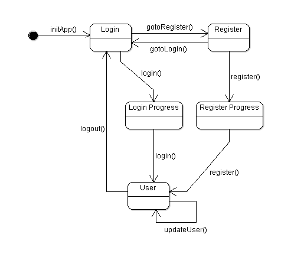

This document outlines the basic architecture of the Login Example application. You will get an overview about the application flow and states. Furthermore, types of value objects and client-server interface (Delegates) will be discussed.
With the Login Example application you will be guided through a simple login or registering process. After you have been logged in the application lets you change and update your user account information. The following state chart diagram shows the application flow.

Furthermore,
the Login Example application lets you choose between different
layouts (“web” or “phone” layout). Depending
on the layout you have chosen you can select between different
coloring styles (“red” or “green”) and
languages (“English” or “German”). Since the
coloring style and the language of an application is always dependent
on its application layout – imagine an application with
different writing directions (for example English or Chinese) or an
application which is running on different devices (web browser or
mobile phone) with different coloring styles (“Summer” or
“Winter” theme) – the Login Example application
should be able to deal with that, too.
The Login Example application uses the following value objects.

SettingsVO - layouts : ArrayCollection <LayoutVO> LayoutVO - name : String - width : Number - heigth : Number - stateName : String - styles : ArrayCollection <StyleVO> - locales : ArrayCollection <LocaleVO> LocaleVO - name : String - code : String StyleVO - name : String - path : String AuthenticationVO - username : String - password : String - email : String UserVO - username : String - firstname : String - lastname : String - email : String - birthday : Date
The client-server communication will be will be defined in delegate classes. The Login Example application uses the following methods for client-server communication..
IAppDelegate - getSettings() : SettingsVO - login(auth : AuthenticationVO) : UserVO - register(auth : AuthenticationVO) : UserVO - updateUser(user : UserVO) : UserVO